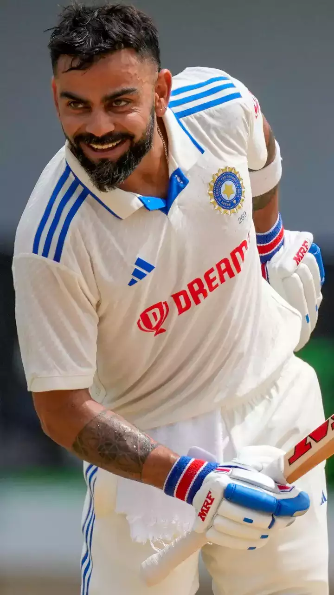

back page
virat kohli

- virat kohli
-
Born and raised in New Delhi, Kohli trained at the West Delhi Cricket
Academy and started his youth career with the Delhi Under-15 team. He
made his international debut in 2008 and quickly became a key player in
the ODI team and later made his Test debut in 2011. In 2013, Kohli
reached the number one spot in the ICC rankings for ODI batsmen for the
first time. During 2014 T20 World Cup, he set a record for the most runs
scored in the tournament. In 2018, he achieved yet another milestone,
becoming the world's top-ranked Test batsman, making him the only Indian
cricketer to hold the number one spot in all three formats of the game.
His form continued in 2019, when he became the first player to score
20,000 international runs in a single decade. In 2021, Kohli made the
decision to step down as the captain of the Indian national team for
T20Is, following the T20 World Cup and in early 2022 he stepped down as
the captain of the Test team as well. He has received many accolades for
his performances on the cricket field. He was recognized as the ICC ODI
Player of the Year in 2012 and has won the Sir Garfield Sobers Trophy,
given to the ICC Cricketer of the Year, on two occasions, in 2017 and
2018 respectively. Subsequently, Kohli also won ICC Test Player of the
Year and ICC ODI Player of the Year awards in 2018, becoming the first
player to win both awards in the same year. Additionally, he was named
the Wisden Leading Cricketer in the World for three consecutive years,
from 2016 to 2018. At the national level, Kohli was honoured with the
Arjuna Award in 2013, the Padma Shri under the sports category in 2017
and the Khel Ratna award, India's highest sporting honour, in 2018. In
2016, he was ranked as one of the world's most famous athletes by ESPN,
and one of the most valuable athlete brands by Forbes. In 2018, Time
magazine included him on its list of the 100 most influential people in
the world. In 2020, he was ranked 66th in Forbes list of the top 100
highest-paid athletes in the world for the year 2020 with estimated
earnings of over $26 million. Kohli has been deemed one of the most
commercially viable cricketers, with estimated earnings of ₹165 crore
(US$21 million) in the year 2022. Early life Virat Kohli was born on 5
November 1988 in Delhi into a Punjabi Hindu family. His father, Prem
Kohli, worked as a criminal lawyer and his mother, Saroj Kohli, served
as a housewife. He has an older brother, Vikas, and an older sister,
Bhawna.[6] Kohli's formative years were spent in the Uttam Nagar and
commenced his early education at Vishal Bharti Public School.[7]
According to his family, Kohli exhibited an early affinity for cricket
as a mere three-year-old. He would pick up a cricket bat, display
natural skill, and request his father to bowl to him.[8] In 1998, the
West Delhi Cricket Academy (WCDA) was created and on 30 May of that
year, Prem Kohli, espoused his younger son's fervour for cricket,
assisted nine-year-old Kohli's aspirations and arranged for him to meet
Rajkumar Sharma, who initially perceived him to be just another
enthusiastic and determined young boy. However, two weeks later, Sharma
was impressed by Kohli's accuracy and power in throwing.[9] Upon the
suggestion of their neighbours, Kohli's father considered enrolling his
son in a professional cricket academy, as they believed that his
cricketing abilities merited more than just playing in the gully
cricket.[10] Despite his abilities, he faced the setback of being unable
to secure a place in the under-14 Delhi team, not due to a lack of merit
but due to extraneous factors. Prem Kohli received offers to relocate
his son to influential clubs, which would have ensured his selection,
but he declined the proposals, as he was determined that Kohli should
earn his recognition based on his own merit and overcome the system of
nepotism and deceit prevalent in the Delhi and District Cricket
Association (DDCA). Kohli persisted and eventually found his way into
the under-15 Delhi team.[11] He received training at the academy while
simultaneously participating in matches at the Sumeet Dogra Academy
located at Vasundhara Enclave.[12] As per Sharma's recollection of
Kohli's initial days at his academy, he exuded remarkable talent, making
it arduous for the coach to curb his enthusiasm. Kohli remained prepared
to bat at any position, and often, Sharma had to physically coerce him
to leave the training sessions, as he was reluctant to depart.[13] In
pursuit of furthering his cricketing career, he transitioned to Saviour
Convent School during his ninth-grade education.[10] Kohli's ardent
passion for cricket compelled him to travel long distances with his
father to ensure that he never missed a match. With time, he diligently
honed his skills and diversified his range of shots, commanding respect
from the local bowlers.[14] On the 18th of December 2006, Kohli
experienced the loss of his father due to a cerebral attack.[10][15]
During his childhood, his father played a crucial role in supporting his
cricket training. Kohli has credited his father as the one who drove him
to practice every day. He has expressed his feelings of missing his
father's presence at times.[7][16] Following the demise of Kohli's
father, his mother observed a significant change in his personality.
Kohli appeared to become more mature overnight, and he began taking
every cricket match seriously. He harboured an aversion to exclusion
from games and appeared to channel his entire existence into the pursuit
of cricket following his father's untimely demise.[10] Kohli's family
resided in Meera Bagh, Paschim Vihar until the year 2015, after which
they relocated to Gurgaon.[17] Youth and domestic career Delhi Kohli's
junior cricket career kicked off in October 2002 at the Luhnu cricket
ground in a Polly Umrigar match against the host state of Himachal
Pradesh. In his debut match, Kohli managed to score a total of fifteen
runs. His first half-century in national cricket came at Ferozeshah
Kotla, where he scored 70 runs against Harayana.[18] By the end of the
season, Kohli had amassed a total of 172 runs, emerging as the highest
run-scorer for his side with an average of 34.40.[19] During the 2003–04
season, Kohli was appointed as the captain of the under-15 team. In his
first match of the season, he scored 54 runs in Delhi's victory over
Himachal Pradesh. In the next fixture against Jammu and Kashmir, Kohli
scored his maiden century with a score of 119 in a BCCI-conducted game.
By the end of the season, he had amassed a total of 390 runs at an
average of 78, which included two centuries.[20][21][a] Towards the end
of 2004, Kohli earned selection for the 2004–05 Vijay Merchant Trophy
with the Delhi under-17 team. In the four matches that he played, Kohli
accumulated a total of 470 runs, with his highest score being 251* runs.
The team's coach, Ajit Chaudhary, lauded his performance and was
particularly impressed with his temperament on the field.[22][23] In the
2005–06 season, Kohli commenced his innings with a score of 227 against
Punjab. Following their victory over Uttar Pradesh in the
quarter-finals, Delhi was scheduled to play against Baroda in the
semi-finals. The team had high expectations from Kohli, who had promised
his coach to finish the job. True to his word, Kohli went on to score
228 runs, leading Delhi to victory. The team later secured the
tournament with a five-wicket win over Mumbai, where he contributed with
a half-century in the first innings.[24] He ended as the highest
run-scorer with a total of 757 runs from 7 matches, averaging 84.11.[25]
On the 18th of February, 2006, Kohli made his debut in List A cricket,
playing against Services in the Ranji One-Day Trophy, but he did not
have the opportunity to bat during the match.[26] In 2006, Kohli had
garnered enough attention to earn a spot in the state senior team.
Subsequently, he made his first-class debut on the 23rd of November,
2006, during the opening match of the Ranji Trophy season against Tamil
Nadu. However, his debut innings was a brief one, as he was dismissed
after scoring ten runs.[27] In a sequence of three matches, Kohli failed
to score a fifty, leading his coaches to provide him with counselling.
In the subsequent match against former champions, Karnataka, Delhi found
themselves trailing with a score of 130/5, with Kohli remaining unbeaten
on 40 at the end of the day's play. That very night, Kohli's father
passed away at 3:54 a.m. Despite the heart-wrenching news, Kohli
returned to the match and continued to bat and scored 90 runs before he
was dismissed.[28] The team's coach, Chetan Chauhan was impressed by
Kohli's resolute determination and unwavering attitude in the face of
adversity. Venkatesh Prasad also lauded his crucial knock, which was
executed in the midst of an emotional upheaval.[29] Following his
dismissal, Kohli immediately attended his father's funeral. His innings,
however, proved to be crucial for Delhi as they were able to avoid the
follow-on. The team's captain, Mithun Manhas, praised Kohli for his
performance, acknowledging its pivotal role in the team's success.[29]
Kohli's foray into T20 cricket took place in April 2007, during the
Inter-State T20 Championship, where he emerged as the top run-getter for
his team with a tally of 179 runs at an average of 35.80.[30] In
September 2008, Kohli played in Nissar Trophy against SNGPL (reigning
champions of the of Quaid-i-Azam Trophy from Pakistan). He emerged as
the leading scorer for Delhi in both innings, registering 52 runs in the
first innings and a towering 197 in the second. The match ultimately
ended in a draw, SNGPL being declared the victors due to their lead in
first innings.[31] In the 2009–10 Ranji Trophy season, Kohli returned to
domestic cricket. During a match against Maharastra, he opened the
batting and scored 67 runs, helping Delhi to secure the bonus point
required for victory.[32] Kohli's performance reinvigorated the
competitive spirit of the domestic cricket circuit. Ashish Nehra
observed his growth over time and shared his thoughts:[33] I did not see
him waste his time. If not on the field, he would be busy in the gym. I
saw him first as a chubby-cheeked bubbly young kid who grew into a
perfect athlete. His junior cricket lessons have obviously helped him. I
did not now him well, but had heard a lot about his exploits in junior
cricket. India Under-19 In July 2006, Kohli was selected in the India
Under-19 squad on its tour of England. He averaged 105 in the
three-match ODI series against England Under-19s,[34] while also
averaging 49 in the three-match Test series.[35] Following India
Under-19's success in both the ODI and Test series, the team's coach
Lalchand Rajput noted Kohli's adeptness in facing both pace and spin
bowling and expressed his admiration for profound technical prowess.[36]
In September, the India Under-19 team toured Pakistan. In the first Test
match, Kohli scored 63 and 28 as India won by 271 runs against Pakistan
Under-19s. In the second match, he contributed 83 runs to India's
victory by 240 runs and an innings. He concluded the tour with 80 runs
in the final ODI game at Lahore.[37] In early 2007, Kohli was a part of
the India Under-19 team that toured New Zealand, where he scored 113 in
the first Test match. The series ended in a draw with a 1–1 score line.
In the following month, the team travelled to Malaysia for a tri-series
against England Under-19s and Sri Lanka Under-19s, where Kohli did not
get many opportunities to bat. In July–August, India Under-19 embarked
on a tour for a tri-series against Sri Lanka Under-19s and Bangladesh
Under-19s, where he did not score a half-century in any of the matches.
However, he made a comeback with scores of 144 and an unbeaten 94 in the
following Test series.[38] In February–March 2008, Kohli assumed the
captaincy of the Indian squad that went on to triumph at the 2008
Under-19 Cricket World Cup held in Malaysia. He demonstrated his
competence as a batsman, amassing 235 runs in 6 games at an average of
47, ranking as the tournament's third-highest scorer and one of three
cricketers to compile a century.[39] His century, a knock of 100 runs
off 74 balls, versus the West Indies Under-19s in a group stage
encounter, was lauded by ESPNcricinfo, as "the innings of the
tournament." This innings paved the way for India's 50-run triumph and
fetched Kohli the man of the match award.[40] Additionally, Kohli's
all-round performance in the semi-final against New Zealand Under-19s,
where he captured 2 wickets and contributed 43 runs in the run-chase,
was significant to India's 3-wicket victory.[41] In the championship
match, Kohli managed a modest score of 19 against South Africa
Under-19s, his contribution lead to India's eventual 12-run win (via D/L
method).[42] In June of the year 2008, Kohli and his Under-19 teammates
Pradeep Sangwan and Tanmay Srivastava were awarded the Border-Gavaskar
scholarship. This scholarship, aimed at honing the skills of the chosen
cricketers, provided an opportunity to train for six weeks at Cricket
Australia's Centre of Excellence in Brisbane.[43] In a bid to identify
potential talent for the senior team, Kohli was selected to represent
India Emerging Players in the Emerging Players Tournament of 2008.
Notably, his finest performance in the tournament was against New
Zealand Emerging Players, where he played a knock of 120 runs, leading
India to a seven-wicket victory. With an aggregate of 204 runs, Kohli's
performances did not go unnoticed by the national selectors who were
observing his progress. With twenty-eight under-19 ODIs and twelve
under-19 Tests, he embarked on his journey to international cricket by
joining the senior team on their flight to Colombo.[44] International
career 2008–2009: Debut and maiden stint In August 2008, Kohli was
selected for inclusion in the ODl squad for the tour of Sri Lanka and
the Champions Trophy in Pakistan. Prior to the Sri Lankan tour, Kohli
had limited experience, with only eight List A matches under his
belt.[45] So, his selection was considered a "surprise call-up".[46]
During the Sri Lankan tour, as both first-choice openers Sachin
Tendulkar and Virender Sehwag, were unable to play due to injury, Kohli
was required to fill the role of makeshift opener throughout the
series.[47] On 18 August 2008, Kohli made his international debut at the
age of 19 in the first ODI of the tour, where he was dismissed for 12
runs, caught dead in front by an incutter from Nuwan Kulasekara.[48]
However, in the fourth match of the series, Kohli achieved his inaugural
half century in the ODl format, with a total of fifty-four runs
scored.[49] Following the postponement of the Champions Trophy to 2009,
Kohli was picked as a replacement for the injured Shikhar Dhawan in the
India A squad for the unofficial Tests against Australia A in September
2008.[50] Despite limited opportunities, he managed to make an impact in
the single innings that he participated in, scoring 49 runs.[51] In
October 2008, Kohli participated in a four-day tour match against
Australia as part of the Indian Board President's XI team. The match
featured a formidable Australian bowling line-up that consisted of Brett
Lee, Stuart Clark, Mitchell Johnson, Peter Siddle and Jason Krejza.
Despite this, Kohli displayed his batting prowess by scoring 105 runs in
the first innings and an unbeaten 16 runs in the second innings,
demonstrating his ability to perform against high-level international
competition.[52] In November 2008, Kohli was selected for inclusion in
the squad for the home ODI series against England, due to the presence
of established and experienced players such as Tendulkar and Sehwag, he
was not given an opportunity to play in any of the matches.[53] In
December 2008, Kohli was awarded a Grade D contract by the Board of
Control for Cricket in India (BCCI) as part of the annual contract list
for the Indian national team which entitled him to receive ₹1.5 million
(equivalent to ₹4.2 million or US$52,000 in 2023), A certain level of
remuneration for representing the national team in various matches and
events.[54] Despite being awarded a contract, in January, Kohli was
dropped for the five-match ODl series against Sri Lanka in Sri
Lanka.[55] In July–August 2009, Kohli was selected in the four-team
Emerging Players Tournament, held in Australia. He was selected to open
the innings for the Indian Emerging Players team in the tournament, and
he went on to have a standout performance. Kohli finished as the
tournament's leading run-scorer, with a total of 398 runs from seven
matches, at an average of 66.33. He was particularly impressive in the
final match, where he scored 104 runs off 102 balls against the South
Africa Emerging Players team in Brisbane. His strong performance helped
lead his team to a 17-run victory and the tournament title.[56][57] At
the conclusion of the tournament, Kris Srikkanth, the Chairman of the
Indian national selection committee, expressed his admiration for
Kohli's performance during the tournament. Srikkanth stated, "I must
say, opener Virat Kohli was outstanding. Some of the shots he played
spoke about his ability."[58] Kohli himself has stated that this
tournament was a "turning point" in his career.[59] In August 2009,
Kohli returned to the national team after recovering from a minor
shoulder injury, replacing the injured Gautam Gambhir in the Indian
squad for the tri-series in Sri Lanka.[60] He was also utilized as a
middle order batsman in the 2009 ICC Champions Trophy due to an injury
sustained by Yuvraj Singh.[61] In December of that same year, he was
included in the team for home ODI series against Sri Lanka and scored
27[62] and 54 in the first two ODIs before making way for Yuvraj, who
regained fitness for the third ODI. However, due to the reoccurrence of
a finger injury, Yuvraj was ruled out indefinitely,[63] which led to
Kohli's return to the team in the fourth ODI at Kolkata. In that match,
Kohli scored his maiden ODI century–107 off 114 balls–while sharing a
224-run partnership for the third wicket with Gambhir. As a result of
this performance, India won by seven wickets and sealed the series
3–1.[64][b] 2010–2011: Rise through the ranks In January 2010, Kohli was
given the opportunity in tri-nation ODI tournament in Bangladesh, as
Tendulkar was rested for the event.[65] During the series, Kohli became
just the third Indian player to score two ODI centuries before the age
of 22.[66] He was widely hailed for his performances, and ultimately
emerged as the leading run-scorer of the series, with 275 runs from five
innings at an impressive average of 91.66.[67] Kohli's success on the
field belies the stereotype of him as a brash and arrogant player. In
fact, Indian captain MS Dhoni has noted that "he has grabbed his
chances" and that "he has matured now." Dhoni went on to say that "To
us, he comes as a 'humble guy'. He might come across different to the
world."[68] Kohli batting in an ODI against New Zealand in December 2010
Kohli's initial foray into leadership on an international level occurred
in May–June 2010, when he was appointed as vice-captain for the
tri-series against Sri Lanka and Zimbabwe in Zimbabwe. This appointment
came as many more established players were rested for the tour. However,
in the first match, Kohli was dismissed on a diamond duck, a rare and
unusual mode of dismissal.[69] Despite this early setback, Kohli managed
to become the fastest Indian batsman at the time to reach 1,000 runs in
ODI cricket, achieving this milestone in 26 innings.[70] Kohli also made
his International T20 debut against Zimbabwe at Harare, where he scored
an unbeaten 26.[71] Later that month, during the 2010 Asia Cup, Kohli
was included in the Indian team and was given the role of batting at
number 3. However, his struggles with form started as he scored a total
of 67 runs at an average of 16.75.[72] This poor form was also reflected
in the tri-series against Sri Lanka and New Zealand in Sri Lanka where
his average was a mere 15.[73] Despite his recent struggles with form,
Kohli was retained in the Indian ODI squad for a three-match series
against Australia in October. In the only completed match of the series,
held at Visakhapatnam, Kohli scored a century, earning him the man of
the match award. He candidly acknowledged that he was under significant
pressure to maintain his place in the team, given his previous failures
in the preceding series.[74] During the home ODI series against New
Zealand, Kohli scored another match-winning century in the first match,
marking his fourth ODI hundred and second in succession.[75] The Indian
team emerged victorious with a 5–0 whitewash over New Zealand, and
Kohli's exceptional performances in the series solidified his position
in the ODI team and made him a strong candidate for a spot in India's
World Cup squad.[76][77] He was India's leading run-scorer in ODIs in
2010, accumulating 995 runs from 25 matches at an average of 47.38,
including three centuries and seven half-centuries.[78] "He is a very
physical type of player. He likes to impose himself on the game, backs
it up with his skill." – Team India's coach Dav Whatmore at the 2008
Under-19 World Cup on Kohli, [79] Kohli was India's leading run scorer
in the five-match ODI series of the South African tour in January 2011,
with 193 runs including two fifties, both in Indian defeats.[80] During
the series, he jumped to number two spot on the ICC Rankings for Men's
ODI batters,[81] and was named in India's 15-man squad for the World
Cup.[82] Kohli played in every match of India's successful World Cup
campaign. He scored an unbeaten 100 in the first match against
Bangladesh and became the first Indian batsman to score a century on
World Cup debut.[83] In the final against Sri Lanka at Mumbai, he scored
35, sharing an 83 runs partnership with Gambhir for the third wicket
after India had lost both openers within seven overs while chasing
275.[84][85] Kohli fielding during a match in December 2010 Breakthrough
in Test cricket When India toured the West Indies in June–July 2011,
they selected a largely inexperienced squad, resting Tendulkar while
others such as Gambhir and Sehwag missed out due to injuries. Kohli was
one of three uncapped players in the Test squad.[86] Kohli made his Test
debut at Kingston in the first match of the Test series that followed.
He batted at 5th position and was dismissed on scores of 4 and 15,
caught behind off the bowling of Fidel Edwards in both innings.[87]
India went on to win the Test series 1–0 but Kohli amassed just 76 runs
from five innings,[88] struggling against the short ball.[89] Initially
got dropped from the Test squad for India's four-match series in England
in July and August due to poor performance in his debut series. However
Kohli was recalled as a replacement for the injured Yuvraj,[90] though
he did not get to play in any match of that series. He found moderate
success in the subsequent ODI series in which he averaged 38.80.[91] His
score of 55 in the first ODI at Chester-le-Street was followed by a
string of low scores in the next three matches.[49] In the last game of
the series at Cardiff, Kohli scored his sixth ODI hundred–107 runs off
93 balls–and shared 170 runs partnership with Rahul Dravid for the third
wicket,[92] who was playing his last ODI match.[93] Kohli was dismissed
hit wicket in that innings .It was the only century in the series by any
player of either team and earned him praise for his "hard work" and
"maturity".[94] In October 2011, Kohli was the leading run scorer of the
five-match home ODI series against England which India won 5–0. He
scored a total of 270 runs across five matches at an average of 90. This
included unbeaten knock of 112 from 98 balls at Delhi, where he put on
an unbroken 209 run partnership with Gambhir;[95] followed by innings of
86 at Mumbai, both the knocks came in successful run chases.[96] Owing
to his ODI success, Kohli was included in the Test squad to face the
West Indies in November. He was selected in the final match of the
series at Mumbai in which he scored a pair of fifties.[97] India won the
subsequent ODI series 4–1 in which Kohli managed to accumulate 243 runs
at 60.75.[98] During the series, Kohli scored his eighth ODI century and
his second at Visakhapatnam, where he made 117 off 123 balls in India's
run chase of 270.[99] A knock which raised his reputation as "an expert
of the chase".[100] Kohli ended up as the leading run-getter in ODIs for
the year 2011, with 1381 runs from 34 matches at 47.62 including four
centuries and eight fifties.[101] During tour of Australia in December
2011, Kohli failed to go past 25 in the first two Tests, as his
defensive technique was exposed.[102] While fielding on the boundary
during the second day of the second match at Sydney, he gestured to the
crowd with his middle finger for which he was fined 50% of his match fee
by the match referee.[103] He top scored in each of India's innings in
the third Test at Perth with scores of 44 and 75, even as India got
their second consecutive innings defeat.[104][105] In the fourth and
final match at Adelaide, Kohli scored his maiden Test century, 116 runs
in the first innings.[106] India suffered a 0–4 whitewash and Kohli,
India's top run-scorer in the series was described as "the lone bright
spot in an otherwise nightmare visit for the tourists".[107] 2